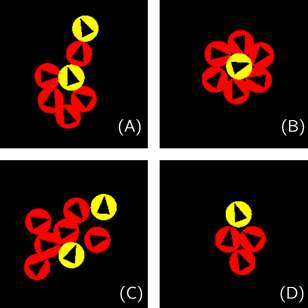

During my master's thesis, I had the exciting opportunity to choose a project aligned with my research interest in Reinforcement Learning (RL). The objective of this project was to model the behaviors of Active Brownian Particles using RL. While the topic was fascinating, I initially struggle with understanding Active Brownian Particles, as it was an area I wasn't too familiar with. In a nutshell, active Brownian particles are just a bunch of things that move sopntaniously, often found in complex biological systems such as bird flocking and bacterial behavior. Then, I want to control these particles using RL to perform different behaviours, for instance, clustering or flocking. It is fun because we get to see how these particles started moving in such a way that is fascinating. Also, I want to thank my supervisor Dr. Tom Oakes for guiding me in this project.
To begin, we defined state, action and reward for our agent (the particles).
And we create two types of agents, flocking agents and clustering agents: The flocking agents will try their best to flock arund freely (maximizing the global active work); while the clustering agents will try their best to suspend any movement (maximizing the global active work). Then, we throw them into a 2D periodic boundary conditions space to learn and achieve their goal (at the same time staring at them like a proud father, and hope fun behaviours would emerge).
In the begining of the project, I tried Q-function, but it turned out not to be a meh, as it struggled with fine-grained time units and perturbed rewards. So, I moved on to model-based learning with a pinch of TD-Learning and a sprinkle of other learning tricks. And It worked like a charm!
Next, I used Multi-Agent Reinforcement Learning (MARL) framework to whip up two types of agents that either went all-in to maximize active work or played it cool and minimized it. Our flocking agents were like synchronized swimmers, keeping the group together and avoiding collisions. On the other hand, our clustering agents huddled up in dense groups, barely moving a muscle to minimize their active work.
Flocking agents performing flocking behaviours. Clustering agents doing their things to minimize movement.  Fig.1 Notable behaviours occur among our trained adversarial behaviour agents, or prey-predator model. (A) Prey (yellow cell on top) ”saves” another captured prey (yellow cell at the centre) by distracting predators (red cells). (B) It requires a minimum of six predators to completely surround a prey, to suppress its movement. (C) Predators distracted by multiple preys. (D) Predators chasing after a prey.Here comes the fun part! I threw both types of agents into the same system to see what kind of behaviours they'd get up to. The clustering agents turned into sneaky predators, capturing the flocking agents without chasing them blindly. Meanwhile, the flocking agents tried to distract the clustering agents with their fancy flocking moves. I also looked into how many of each type of agent it would take for one side to outsmart the other (it is like a little competitions).
Emergence of Prey-Predator Model.In our prey-predator showdown, the prey didn't quite dodge the incoming predators as well as I hoped. It turns out our agents needed a bit more sensory info in their state space. So, what if we give our agents a little upgrade, like including predator positions in their state space or even creating a cool visual radar around their bodies? If we can get these improvements just right, we'll have an even better prey-predator model to explore, and who knows what other cute little discoveries we'll make! Anyway, this blog post omitted quite a lot of details from the thesis, I recommend you to check out the code and full paper from [1].